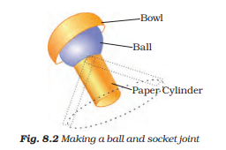
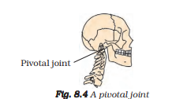

Did you notice that we are able to bend or rotate our body in places where two parts of our body seem to be joined together — like elbow, shoulder or neck? These places are called joints. Can you name more such joints? If our body has no joints, do you think it would be possible for us to move in any way at all? What exactly is joined together at these joints? Press your fingers against the top of your head, face, neck, nose, ear, back of the shoulder, hands and legs including the fingers and toes. Do you get a feel of something hard pressing against your fingers? The hard structures are the bones. Repeat this activity on other parts of your body. So many bones! Bones cannot be bent. So, how do we bend our elbow? It is not one long bone from the upper arm to our wrist. It is different bones joined together at the elbow. Similarly, there are many bones present in each part of the body. We can bend or move our body only at those points where bones meet. There are different types of joints in our body to help us carry out different movements and activities. Let us learn about some of them.
Roll a strip of paper into a cylinder. Make a small hole in an old rubber or plastic ball (under supervision) and push the paper cylinder into it as shown in Fig. 8.2. You can also stick the cylinder on the ball. Put the ball in a small bowl. Does the ball rotate freely inside the bowl? Does the paper cylinder also rotate? Now, imagine that the paper cylinder is your arm and the ball is its end. The bowl is like the part of the shoulder to which your arm is joined. The rounded end of one bone fits into the cavity (hollow space) of the other bone . Such a joint allows movements in all directions.
The joint where our neck joins the head is a pivotal joint. It allows us to bend our head forward and backward and turn the head to our right or left.
In a pivotal joint a cylindrical bone rotates in a ring